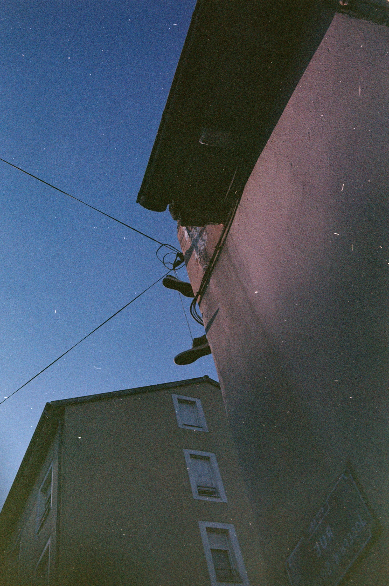

/ back to photography / It's getting blurry through thick chemicals clouds, few light reach us, somehow forming, picture of empty places. 2024-08 end-of-day France - Lyon - Parc de la Cerisaie 35mm Fuji Superia Reala 100 (expired) Minolta MD 35mm Minolta X-500 ∧ Hidden behind the trees, massive block of concrete. I'm told people lives there, lost in the emptiness of the sky, taking turns for who gets to have the sun. Until it fades away, and all share the noisy night. 2024-08 end-of-day France - Lyon - Parc de la Cerisaie 35mm Fuji Superia Reala 100 (expired) Minolta MD 35mm Minolta X-500 > Massive beam of light, piercing though empty sky. Creating infinite horizon, made to lost the mind. Trees become noise, details lost in the warmth. Perfect way to wrap the day, down there at the park. ∨ Fuzzy mix of warm noise, lighter speckles all over. It feels warm it feels dark. And abstract you might think ? But inspect for longer, ... suddenly you notice, silhouetted by bright light, messy shape of vegetation. Covering grey block of what probably is, building of a city. 2024-08 end-of-day France - Lyon - Parc de la Cerisaie 35mm Fuji Superia Reala 100 (expired) Minolta MD 35mm Minolta X-500 ∨ At a corner of the building, where streets cable join, a pair of shoe hanging there, defying gravity thanks to a thin shoe lace. Mushy shadows and immaculate sky, why is it so dusty ?  2024-08 end-of-day France - Lyon - Croix Rousse 35mm Fuji Superia Reala 100 (expired) Minolta MD 35mm Minolta X-500 < Those object you don't look at, part of our mundane life, populating our spaces with purpose. Take a moment to stop on them, maybe the light hitting it right, maybe the shape is odd, or maybe it got though hands of some street artists, but maybe it's not that bland. And when you got all of those, then more than mundane it become, like this trash you shouldn't care. But covered in scribbles, a red plank caught in warm light, it's actually really nice. 2024-08 end-of-day France - Lyon - Parc de la Cerisaie 35mm Fuji Superia Reala 100 (expired) Minolta MD 35mm Minolta X-500 ∨ From the ground they arise, distorted beams of metal. Installed by some creative minds, seeking to catch the eye, of some park passers-by, that may find the contrast, pleasing to look at. Sun plays its part, helped by the trees, warming-up the cold steel, so it's not all gris. 2024-08 end-of-day France - Lyon - Parc de la Cerisaie 35mm Fuji Superia Reala 100 (expired) Minolta MD 35mm Minolta X-500 2024-08 end-of-day France - Lyon - Croix Rousse 35mm Fuji Superia Reala 100 (expired) Minolta MD 35mm Minolta X-500 ∨ At a corner of the building, where streets cable join, a pair of shoe hanging there, defying gravity thanks to a thin shoe lace. Mushy shadows and immaculate sky, why is it so dusty ? 2024-08 end-of-day France - Lyon - Parc de la Cerisaie 35mm Fuji Superia Reala 100 (expired) Minolta MD 35mm Minolta X-500 ∧ Hidden behind the trees, massive block of concrete. I'm told people lives there, lost in the emptiness of the sky, taking turns for who gets to have the sun. Until it fades away, and all share the noisy night. 2024-08 end-of-day France - Lyon - Parc de la Cerisaie 35mm Fuji Superia Reala 100 (expired) Minolta MD 35mm Minolta X-500 < Those object you don't look at, part of our mundane life, populating our spaces with purpose. Take a moment to stop on them, maybe the light hitting it right, maybe the shape is odd, or maybe it got though hands of some street artists, but maybe it's not that bland. And when you got all of those, then more than mundane it become, like this trash you shouldn't care. But covered in scribbles, a red plank caught in warm light, it's actually really nice. 2024-08 end-of-day France - Lyon - Parc de la Cerisaie 35mm Fuji Superia Reala 100 (expired) Minolta MD 35mm Minolta X-500 > Massive beam of light, piercing though empty sky. Creating infinite horizon, made to lost the mind. Trees become noise, details lost in the warmth. Perfect way to wrap the day, down there at the park. 2024-08 end-of-day France - Lyon - Parc de la Cerisaie 35mm Fuji Superia Reala 100 (expired) Minolta MD 35mm Minolta X-500 ∨ Fuzzy mix of warm noise, lighter speckles all over. It feels warm it feels dark. And abstract you might think ? But inspect for longer, ... suddenly you notice, silhouetted by bright light, messy shape of vegetation. Covering grey block of what probably is, building of a city. 2024-08 end-of-day France - Lyon - Parc de la Cerisaie 35mm Fuji Superia Reala 100 (expired) Minolta MD 35mm Minolta X-500 ∨ From the ground they arise, distorted beams of metal. Installed by some creative minds, seeking to catch the eye, of some park passers-by, that may find the contrast, pleasing to look at. Sun plays its part, helped by the trees, warming-up the cold steel, so it's not all gris.